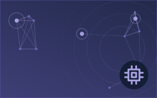
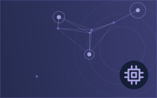
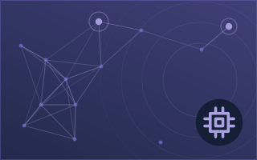
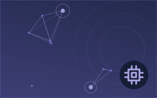
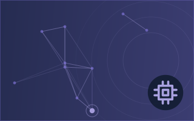

Чипы и вычисления
Заголовки приводятся на английском языке, как они были опубликованы.



China denies spying on Nvidia’s Jensen Huang
Nvidia's lead over Huawei in China's AI accelerator market has narrowed by 80% in a year, bringing CEO Jensen Huang's warnings about losing the country's US$50 billion AI chip market closer to… из DigiTimes Asia
5.5Значимость
2.1Риск · умеренный
87%Уверенность
Ещё в разделе Технологии, ИИ и кибербезопасность
Ещё ›Другие подразделы раздела Технологии, ИИ и кибербезопасность сейчас.







